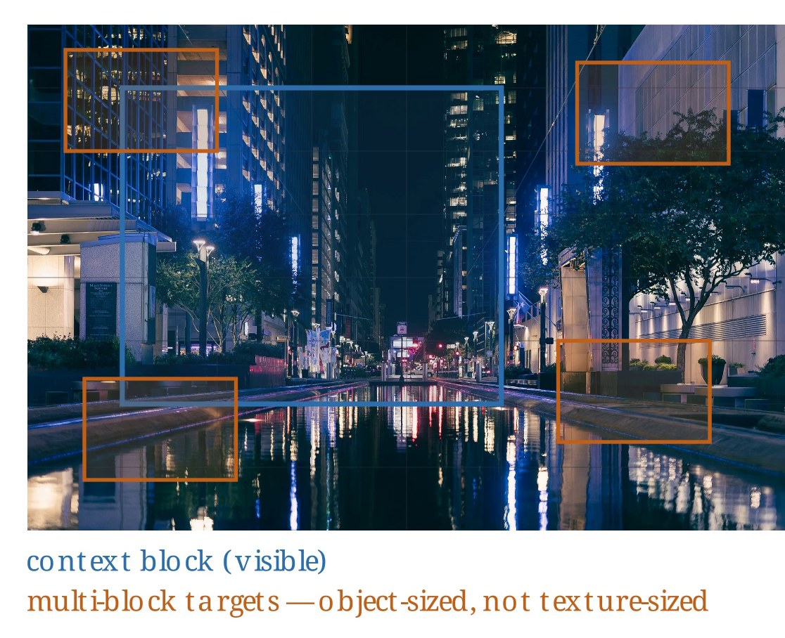
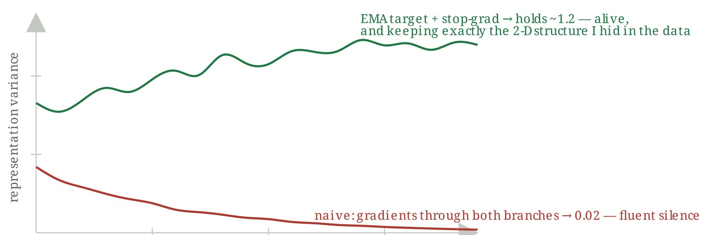
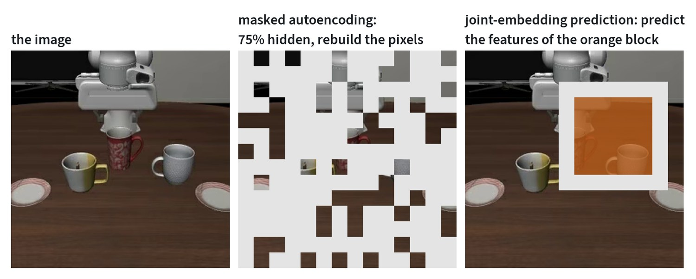
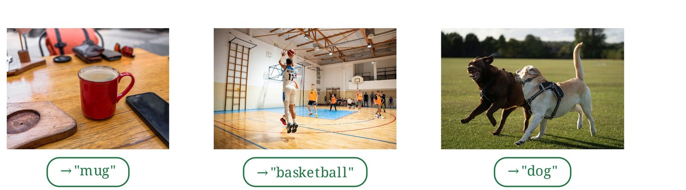
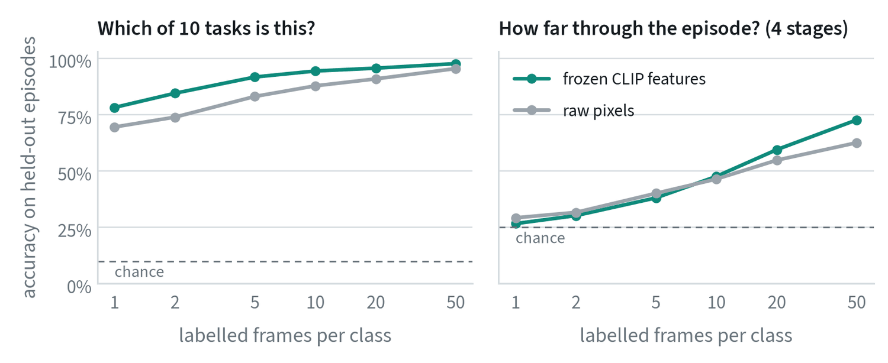
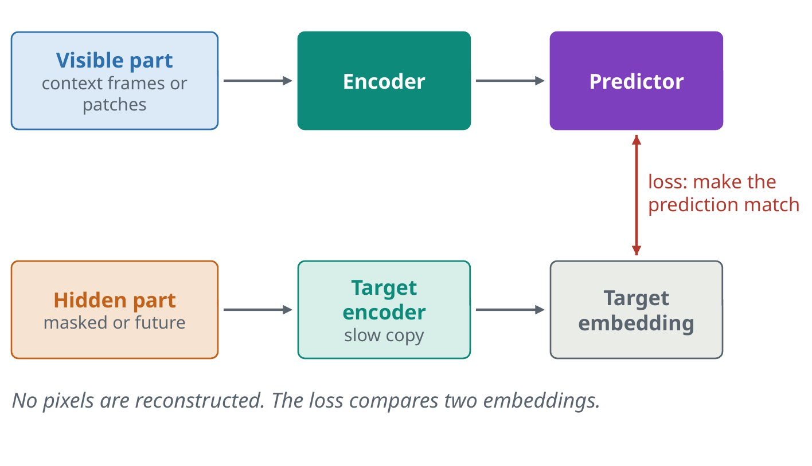

Labels made from the data itself
Labelled data is expensive. Self-supervised learning avoids labels by inventing a prediction problem whose answer is already in the data. This is why models can train on billions of images and hours of video. Three recipes dominate.
Masked modeling
Hide part of the input and predict the missing part. For text, that means predicting hidden or next words. For images and video, it means predicting hidden patches. The model has to learn structure and context to fill the gaps.


Contrastive learning
Take two things known to belong together and make their embeddings match, while pushing apart the embeddings of things that do not. With images and their captions as the pairs, this gives CLIP-style models.

Self-distillation
A student network predicts the output of a teacher that is a slowly updated copy of itself, seeing a different view of the same image. It sounds circular, but it works, and it gives the strong visual features of the DINO family. The slow teacher is essential.


The objectives, written out


Each family of self-supervised learning is a different loss on the same kind of data. Let be an image, a set of hidden patches and the encoder.
Masked autoencoding encodes only the visible patches, and a small decoder rebuilds the hidden ones. The loss is the squared error on the hidden pixels:
Hiding as much as 75% makes the task hard enough to need real understanding and makes training cheap, because the encoder only processes the quarter that is visible.
Self-distillation, the DINO family, shows two different crops of an image to a student and a teacher. The student is trained to match the teacher’s output distribution, and the teacher is an exponential moving average of the student:
Nothing here stops both networks outputting the same thing for every image. Two devices do: the teacher’s outputs are centred, by subtracting a running mean, and sharpened with a low temperature. Together with the slow-moving teacher they keep the representation from collapsing.
Joint-embedding prediction replaces pixels with features as the target. A context encoder sees part of the image, and a predictor must output the features that a slow-moving target encoder produces for the hidden block:
The contrastive objective, the fourth family, has a note to itself.
Vision encoders: the eyes of every modern system
A vision encoder turns an image into a set of feature vectors that other models consume. Almost all of them are Vision Transformers. What differs is how they were trained, and that decides what their features are good at.
| Encoder family | Trained by | Its features are good at | Typical use in robotics |
|---|---|---|---|
| CLIP and SigLIP | Matching images with captions | Meaning that lines up with language | Vision-language models, open-vocabulary recognition |
| DINO family | Self-distillation on images only | Fine spatial detail, parts, correspondence | Manipulation features, tracking, depth |
| Masked autoencoders | Reconstructing hidden patches | Low-level structure | Pretraining on unlabelled domain data |
| Video encoders | Masked or predictive training on clips | Motion and change over time | Dynamics, world models |


Many current robot models feed two encoders at once: a language-aligned one for meaning and a DINO-style one for spatial precision. Choose the encoder by what the features must capture.
How a representation is judged
A representation is useful if simple things can be read from it with little data. The standard test is a linear probe: freeze the encoder, train a single linear layer on its features for some task, and report the accuracy. If a linear layer suffices, the information was already laid out in an accessible form.


Two findings are worth reading closely. With one labelled frame per task, frozen CLIP features identify the task 78% of the time, which is the point of pretraining: the work was done before any labels arrived. And the pixel baseline is not far behind on this question, 70%, because these scenes look very different from one another. On the harder question, how far through the episode a frame is, both start at chance and pretrained features pull ahead only once there are twenty labels.
The lesson is that “good features” is always relative to a question. A language-aligned encoder knows what objects are in the scene. It was never trained to notice how far a gripper has closed.
| Protocol | What is trained | What it measures |
|---|---|---|
| k-nearest neighbours | Nothing | Whether similar inputs are already close together |
| Linear probe | One linear layer | Whether the information is linearly readable |
| Attentive probe | A small attention layer over patch features | Whether it is present in the patches, if not in one summary vector |
| Fine-tuning | Everything | How good a starting point the weights are |
Predicting in feature space
A model forced to predict every pixel spends capacity on detail that cannot be predicted and does not matter, such as texture and sensor noise. A joint-embedding predictive architecture, or JEPA, predicts the representation of the hidden or future part instead.


For robots this is attractive. What matters for a decision is where the cup will be, not the grain of the table under it.
Embeddings and retrieval
Once similar things land close together in embedding space, hard problems turn into nearest-neighbour lookups. Search becomes “find the closest vectors”. Metric learning trains that distance directly, and it is how product search, re-identification and warehouse item matching work.
Common mistakes
- Using one encoder for everything. A language-aligned encoder can be weak on fine spatial detail, and the reverse.
- Assuming features transfer. Features learned on web photos can miss what matters in your domain, such as packaging or radar imagery.
- Ignoring collapse. Self-supervised training can quietly converge to a constant output. Monitor the variance of the features.
Terms
- Embedding
- A vector that represents an input so that similar inputs are close.
- Pretext task
- The invented prediction problem used for self-supervision.
- Collapse
- When every input maps to nearly the same embedding.
- Zero-shot
- Doing a task with no training examples for it.
- Linear probe
- A linear classifier trained on frozen features, used to measure what the features encode.
- Pretext task
- A task invented so that a model can be trained without labels.
- Momentum encoder
- A copy of a network whose weights are a slow moving average of another’s.
In my work
Further reading
- Radford et al., 2021. Learning Transferable Visual Models From Natural Language Supervision (CLIP).
- Zhai et al., 2023. Sigmoid Loss for Language Image Pre-Training (SigLIP).
- Oquab et al., 2023. DINOv2: Learning Robust Visual Features without Supervision.
- Assran et al., 2023. Self-Supervised Learning from Images with a Joint-Embedding Predictive Architecture (I-JEPA).
- He et al., 2021. Masked Autoencoders Are Scalable Vision Learners.
- Caron et al., 2021. Emerging Properties in Self-Supervised Vision Transformers (DINO).